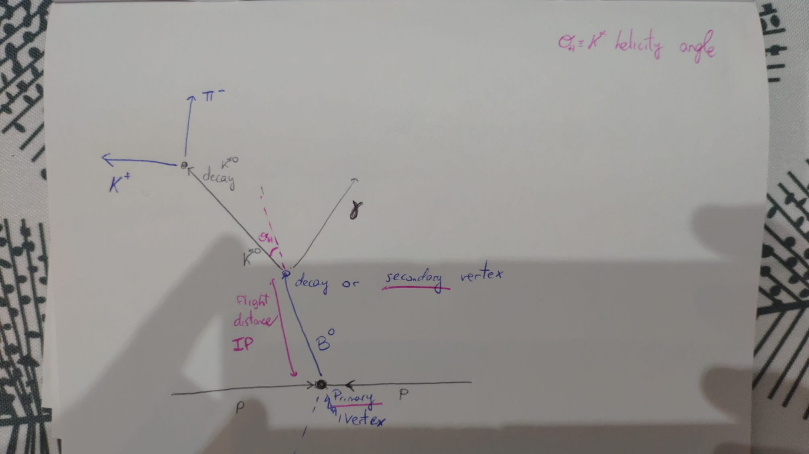

What its interesting
- Feature Engineering
- Mathematical modeling
- Some Tips & Tricks
Feature Engineering
Looked at a couple of papers about the collisionFeature Engineering
Particle schema with the features of the problem
Results
- 181 Features
- Baseline: 0.90AUC (default lightgbm)
Mathematical Modeling
- FastAI Default NN - 0.929
- Selfmade Resnet, Pytorch - 0.934
- Ensemble: 0.937 - (0.86*resnet + 0.14*fastai)
Some Tips & Tricks
Scaling: Gauss Rank Transformation- 0.01 Improvement on AUC
- 2x Faster tranning - 1h30
Averaging predictions through epochs
mean(pred_100 + pred_200 + pred_300)

Methodology [4]
- Understanding the problem
- Understanding the metric
- Feature Engineering
- Mathematical Modeling
- Hyperparameter Optimization
- Ensembling